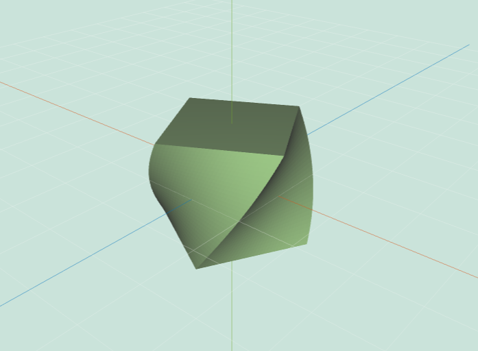
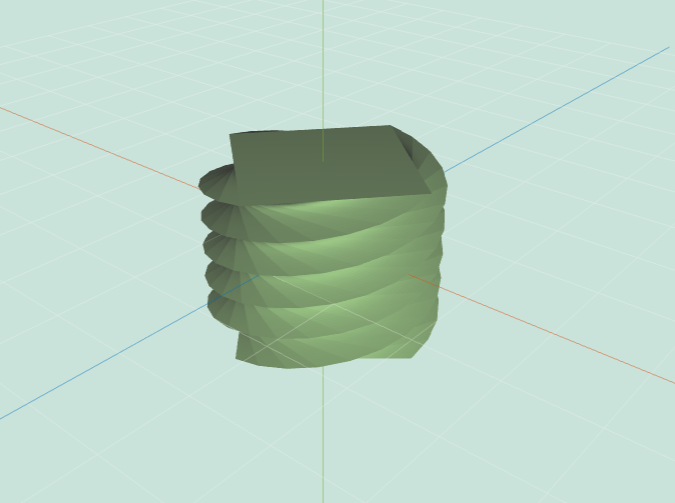
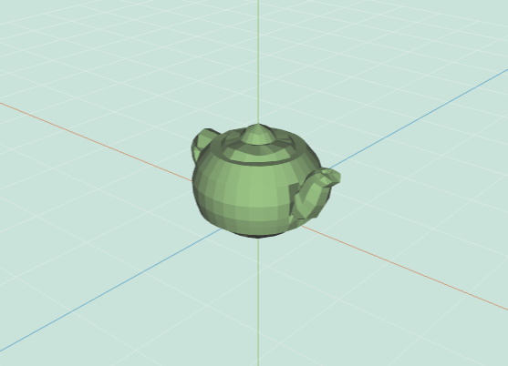
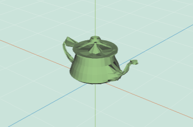

COS426 Assignment 2Modeling — Writeup
Switch to: Interactive Editor
- (0.0) Translation
- (1.0) Rotation
- (0.5) Scale
- (1.5) Traversal
- (0.5) Face Area
- (0.5) Per-vertex Normals
- (0.5) Average Edge Lengths
- (0.5) Twist
- (1.0) Inflate
- (1.0) Wacky
- (1.0) Noise
- (1.5) Smooth
- (1.0) Sharpen
- (2.0) Curvature
- (0.5) Triangulate
- (2.0) Truncate
- (2.0) Extrude
- (1.0) Split Long Edges
- (1.0) Triangle Topology
- (1.0) Loop Subdivision
- (1.0) Quad Topology
- (1.0) Catmull-Clark Subdivision
- (1.0) Art Contest
Translation
This feature was implemented by the course staff. I used it as an example of how to loop over the vertices of a mesh.
Here is an example output where the mesh is translated by 3 along the x axis:

I did not encounter any particular challenges in implementing this.
Rotation
Rotates each vertex first around the x axis, then the y, then the z.

Base_Mesh=teapot.obj&Display_Settings=false;false;flat;false;false;true;false;true;false&Rotation=1;0;0

Base_Mesh=teapot.obj&Display_Settings=false;false;flat;false;false;true;false;true;false&Rotation=0;0.75;0

Base_Mesh=teapot.obj&Display_Settings=false;false;flat;false;false;true;false;true;false&Rotation=0;0;1.5
Scale
Scales from 0,0,0 by multiplying each x,y,z coordinate by a constant.

Base_Mesh=cube.obj&Display_Settings=false;false;flat;false;false;true;false;true;false&Scale=0.5

Base_Mesh=cube.obj&Display_Settings=false;false;flat;false;false;true;false;true;false&Scale=2
Traversal
Uses the halfedges to find all of the vertices/edges/faces connected to each vertice/edge/face.
We had some trouble initially because these methods were hard to test. But they worked correctly after some effort.
Face Area
Splits the face into triangles and computes the area of each triangle and sums.
Per-vertex Normals
Sums the face normals of the faces around the vertex, weighted by the area of the faces. The final vector is then normalized.

Base_Mesh=teapot.obj&Display_Settings=false;false;flat;true;false;true;false;true;false
Average Edge Lengths
Uses the traversal methods to find all of the edges connecting to this vertex. For each edge, find the two vertices and their distance. Average these distances.
Twist
Rotates each vertex about an axis by an amount proportional to its height.

Base_Mesh=large-cube.obj&Display_Settings=false;false;flat;false;false;true;false;true;false&Twist=0.5

Base_Mesh=large-cube.obj&Display_Settings=false;false;flat;false;false;true;false;true;false&Twist=4
Inflate
Moves each vertex in the direction of its normal by an amount proportion to the average edge length of the vertex.

Base_Mesh=teapot.obj&Display_Settings=false;false;flat;false;false;true;false;true;false&Inflate=1

Base_Mesh=teapot.obj&Display_Settings=false;false;flat;false;false;true;false;true;false&Inflate=-1
Wacky
Moves the original mesh in the x direction based on a sine function of the y coordinate.

Base_Mesh=large-cube.obj&Display_Settings=false;false;flat;false;false;true;false;true;false&Wacky=0.26
Noise
Moves each vertex in the direction of its normal by a random amount. This random amount is in proportion to the average edge length of the vertex.

Base_Mesh=hand.obj&Display_Settings=false;false;flat;false;false;true;false;true;false&Noise=0.25

Base_Mesh=hand.obj&Display_Settings=false;false;flat;false;false;true;false;true;false&Noise=1
Smooth
Moves each vertex to a gaussian average of its immediate neighbors. The further away a vertex is the less it is weighted. The sigma for the gaussian is the average distance of the neighbor points.

Base_Mesh=cow.obj&Display_Settings=false;false;flat;false;false;true;false;true;false&Smooth=10

Base_Mesh=cow.obj&Display_Settings=false;false;flat;false;false;true;false;true;false&Smooth=2
Sharpen
Smooth the mesh and then move each vertex opposite to the smoothed mesh.

Base_Mesh=bunny.obj&Display_Settings=false;false;flat;false;false;true;false;true;false&Sharpen=2

Base_Mesh=bunny.obj&Display_Settings=false;false;flat;false;false;true;false;true;false&Sharpen=5

Base_Mesh=large-cube.obj&Display_Settings=false;false;flat;false;false;true;false;true;false&Sharpen=5
Curvature
Finds the curvature of each point based on the sum of the interior angles as described in the paper. The coloring is grayscale and also put through a histogram equilization to make it easier to see subtle differences.

Base_Mesh=cheetah.obj&Display_Settings=false;false;flat;false;false;true;false;true;true&Curvature=
Triangulate
Replaces each face with a set of triangles by drawing edges from one vertex to other vertices on the same face.

Base_Mesh=cylinder.obj&Display_Settings=false;true;flat;false;false;true;false;true;false&Triangulate=

Base_Mesh=dodecahedron.obj&Display_Settings=false;true;flat;false;false;true;false;true;false&Triangulate=
Truncate
Turns each vertex into a face. This is done by creating a new vertex for ever edge minus one, and moving all of the vertices (new and one old) back along the original edges.

Base_Mesh=dodecahedron.obj&Display_Settings=false;true;flat;false;false;true;false;true;false&Truncate=0.448

Base_Mesh=cube.obj&Display_Settings=false;true;flat;false;false;true;false;true;false&Selection=;1&Truncate=0.25
Extrude
Adds a new vertices for each vertex on an original face. Manipulates the edges to turn these new vertices into a new face that's connected to the old edges by more new faces. Moves the face outward along the original face normal.

Base_Mesh=tetrahedron.obj&Display_Settings=false;true;flat;false;false;true;false;true;false&Extrude=0.5

Base_Mesh=tetrahedron.obj&Display_Settings=false;true;flat;false;false;true;false;true;false&Selection=;2&Extrude=1
Split Long Edges
Find the longest edge in the mesh and split it in half. Connect the new vertex to any other vertex on the original face.

Base_Mesh=tetrahedron.obj&Display_Settings=false;true;flat;false;false;true;false;true;false&Selection=;1&Split_Long_Edges=0.1

Base_Mesh=tetrahedron.obj&Display_Settings=false;true;flat;false;false;true;false;true;false&Selection=;1&Split_Long_Edges=1
Triangle Topology
First ensures there are only triangular faces using the triangulate method. Then subdivide each face into four more triangles.

Base_Mesh=cube.obj&Display_Settings=false;true;flat;false;false;true;false;true;false&Tri_Topology=1

Base_Mesh=cube.obj&Display_Settings=false;true;flat;false;false;true;false;true;false&Tri_Topology=3
Loop Subdivision
Like triangle topology, but with the position of each vertex changed using the weights of loop subdivision.

Base_Mesh=cube.obj&Display_Settings=false;true;flat;false;false;true;false;true;false&Loop_Subdivision=3
Base_Mesh=teapot.obj&Display_Settings=false;false;flat;false;false;true;false;true;false&Loop_Subdivision=3
Quad Topology
Adds a new vertex to the middle of each face and adds edges from this new center vertex to the midpoints of each edge on the original face.

Base_Mesh=dodecahedron.obj&Display_Settings=false;true;flat;false;false;true;false;true;false&Quad_Topology=1
Base_Mesh=tetrahedron.obj&Display_Settings=false;true;flat;false;false;true;false;true;false&Quad_Topology=3
Catmull-Clark Subdivision
Mostly like the quad subdivision, but the original vertices and the ones on the original edges are moved to new locations based on the catmull clark weights.

Base_Mesh=tetrahedron.obj&Display_Settings=false;true;flat;false;false;true;false;true;false&Catmull-Clark=2

Base_Mesh=cube.obj&Display_Settings=false;true;flat;false;false;true;false;true;false&Catmull-Clark=4
Art Contest
(Your description of your implentation of Art Contest goes here...)
You can include as many results as you want, but please at least include the following results: